Hornwright Industrial Headquarters
ホーンライト・インダストリアル本社
背景
ホーンライト・インダストリアル本社は、アパラチアのチャールストン中心部にある超高層ビルで、大戦前の鉱業会社ホーンライト・インダストリアルの企業本部です。
CEOダニエル・ホーンライトが推進した完全自動化路線の中枢であり、極秘プロジェクト「マザーロード」が開発されていました。
レイアウト
ビルは地下2階、地上1階、フロア1〜5、最上階のエグゼクティブスイート（6階）の計9フロアで構成されています。
フロア2〜5は中央の吹き抜けを見下ろす構造で、階段で接続されています。
1階（グラウンドフロア）
エントランスホールはメザニン付きのロビーで、オートマイナーが展示されています。受付デスクとターミナル、ヌカ・コーラ自販機があり、南東の角に階段があります。受付デスクの裏に6階へのエレベーターがあります。
2階
テクノロジーサポート部門。ジェフリー・ヴァッカーロのターミナルと、机の中に上級幹部試験の解答用紙があります。隣室にケミストリーステーション。
3階
人事部門と上級幹部採用試験の受験室。反対側にはロックハウンドと同じイグニッション・コア・リアクターを持つ研究エリアがあります。
4階
会議室とペネロペ・ホーンライトの上級執行役オフィス。ティンカーズ・ワークベンチがあり、デスクターミナルに自動採用システムのパスワードが含まれています。
5階
R.ヴァルガスのオフィスなど2つのオフィス。金庫の鍵は机の棚の右下にあります。破壊されたビルの一部から隣接する住居ビルの最上階に出ることもできます。
6階（エグゼクティブフロア）
クエスト「The Motherlode」で上級幹部キーカードを取得後にエレベーターでアクセス可能。CEO・ダニエル・ホーンライトのオフィスと開発ラボがあります。ラボにはマザーロード・プロジェクトの外部接続システムがあり、マザーロード自律採掘ロボットとの通信が可能です。
地下（サブベースメント）
エグゼクティフフロアのエレベーターからアクセス。マザーロード部門があり、武器作業台とパワーアーマーフレームが配置されています。
洞窟（ケイブ）
最深部。マザーロードの環境テストに使用された区画で、クエスト「Division of Wealth」の舞台です。受付にハイジャックがおり、迷路を通ってマザーロードの再調整を行います。
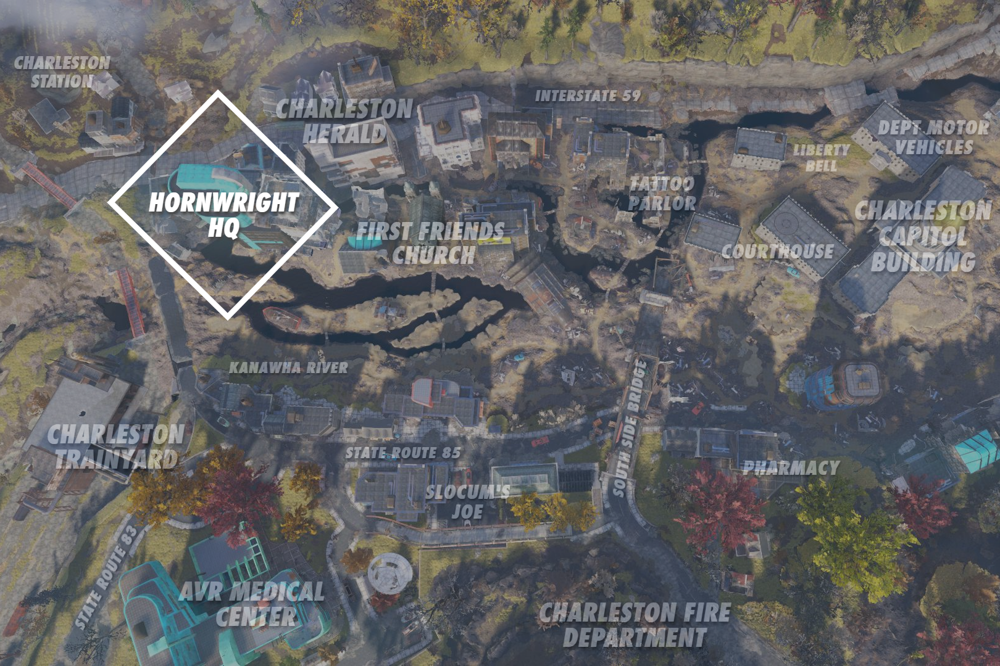
主なアイテム
- Senior executive exam updates — ホロテープ。3階人事部オフィス
- Senior executive exam answer key — メモ。2階ジェフリーの机
- Filing status — メモ。3階人事部オフィス
- Sam Blackwell: "No" on Measure 6 — メモ。エグゼクティブフロア
- "Excavator suit" - Final steps — メモ。地下レベルのダートピット付近
- Algorithm reset test — ホロテープ。洞窟のブルーコンソール上
- Participant survey — メモ。洞窟の受付横の部屋
- Hornwright Estate access keycard — CEOの机の上
- パワーアーマーフレーム — 地下、マザーロード集合地点付近
- フュージョン・コア — 最上階のフュージョンジェネレーター内
- Vault-Tecボブルヘッド（最大3個） / 雑誌（最大3冊）
関連クエスト
- The Motherlode：マザーロード・プロジェクトの調査
- Trade Secrets（Wastelanders）
- Division of Wealth（Wastelanders）
ターミナルエントリ（抜粋）
本社には7台のターミナルが設置されています。以下はCEOと主要なターミナルの翻訳です。
CEOターミナル — ダニエル・ホーンライト
Vault-Tecには「未来に備えよ！」というスローガンがある。まったく同感だ。
ホーンライトの経営を引き継いで以来、私はこのマントラに従ってきた。
父は常に会社の未来は従業員次第だと考えていた。「製品は作る人間の質で決まる」が口癖だった。
父には驚くべき先見の明があったが、その従業員を強く信頼できるものにするテクノロジーがなかった。
だからこそ、私はあらゆる自動労働者プログラムを全力で推進する。
もう病欠も、休暇も、産休も、家族の突然の死もない。
会社の運営に必要な人数を減らしつつ、同じ生産量と品質管理を維持する。
オートマイナー・プログラムはほんの始まりに過ぎない——
私の究極の目標は2100年までにホーンライトを完全自動化することだ。
ターミナルの前に座り、言葉を失っている。
長年愛した人にどうやって別れを告げればいいのか。
妻の死からまだ2日しか経っていないが、まだ現実に感じられない。
あれだけの金を使い、あれだけの医者にかかった。すべて無駄だった。
エヴリンを救えなかった。そして今、失うことができない唯一のものが永遠に去ってしまった。
娘のペニーは大丈夫だと言う、もう受け入れたと。
しかし内心ではこたえているのではないかと思う。
本心を打ち明けてほしいが、あの子の意志はあまりに強い。
これに負けるわけにはいかない。マザーロード・プロジェクトを完成させなくては。
自分のためでなく、正気のためでもなく——エヴリンのためにやり遂げる。
セキュリティからの報告では、ビル・ブレイヤーという間抜けな記者がフェンスを乗り越えてマザーロード・プロジェクトを覗き見にきたそうだ。
レコーダーを武器のように持って突っ込んできた馬鹿だ。
部下たちに他に何ができた？少なくとも一発でクリーンに仕留めた。
PR部門のハンソンが「事実を正す公式声明を出すべきだ」と言ったので即座にクビにした。
この件はすべてのマネージャーに「事故」とだけ呼ぶよう指示を出した。
振り返ってみれば、これが起きてよかったとさえ思う。
もう誰もフェンスを越えてうちのプロジェクトを覗こうとは思わないだろう。
ダニエルだ。
処理してほしい問題がある——サミュエル・ブラックウェル上院議員だ。
投票法案6号の採決が終わるまで、あいつの声を……静かにさせてほしい。
あいつを……脅すんだ。誰も傷つけてはいけない。
ただしばらく姿を消す理由を与えてやれ。
言うまでもないが、うちに辿れないようにしろ。
研究ターミナル — ホセ・ブリガダ博士
ホーンライトが最新のチームメンバーを紹介してくれた——AMSの「電子知能」部門からの引き抜きだ。
「我々の知る採掘の未来だ」というのがホーンライトの紹介時の言葉だった。
この小娘は博士号がひとつ。州立大学の。結論を急がないでほしい、ダニエル。
だが猫の手も借りたい。このジャクソンさんにはコーヒーでも淹れてもらおうか。
来てから4週間で、若きジャクソンさんはマザーロード・プロジェクトの未解決研究課題を3つ完了させた。3つだ！
鉱物間通信——解決。
地殻下ナビゲーション——子供の遊び。
自動音声応答システム——なぜやらない？
彼女は現場修理システムまで設計した。
私のオリジナルのマザーロード設計に基づいているが、作業中断なしにシステムと接続できる。
この子は天才か泥棒だ。AMS時代にたまたまメモしていたものを持ち込んだだけなのかもしれない。
ホーンライトにクビにしてくれと懇願すべきなのか、ノーベル賞に推薦すべきなのか分からない。
そしてまったく——あの子のコーヒーは絶品だ。
ジャクソンさん、
これを読んでいるなら、プロジェクトリーダーへの昇進おめでとう。
あなた以上にふさわしい人はいない。
そしてこれは心の底から言う——今すぐここを出なさい。
ホーンライト氏は正常ではない。彼の被害妄想と孤立はここ数ヶ月で悪化の一途だ。
私の解雇は、「彼の」マザーロード・プロジェクト以外のすべてに対する彼の敵意が増す中で、驚くことではなかった。
お願いだから、あの男がキレる前に辞めてくれ。
あなたの才能は、こんな状況で無駄にされるべきではない。
受付ターミナル — イヴェット・ウィーズマン
あなた次第よ、ダーリン。
私と一緒に来るか、毎週わずかな銀貨と引き換えに魂を削り続けるか。
ただ私が知っているのは、ホーンライトたちがあのロボットのスキャブ（スト破り）で蹴り出した鉱夫たちには家族がいたということ。
彼らを飢えさせることの片棒は担ぎたくない。
——アニー
ホロテープ
ダニエル・ホーンライト：
ハノーバー。ダニエル・ホーンライトだ。
テクノロジーサポート部門が上級幹部試験に私の修正された解答を反映させたと聞いておくが、確認は取ったのか。
私はもう……うんざりしている。骨なし……の「幹部」候補をお前が寄越し続けることに。
ここで生き残れるだけの根性のある候補を見つけてこい。さもなくば、できる人間を別に見つけるぞ。
📍 3階 人事部オフィス、デスクの右側
エンジニア：
……アルゴリズム構成リセット手順を開始……
……一次土壌格納チャンバーを充填中……
……補助土壌格納チャンバーへのアクセスを要求……
……補助土壌格納チャンバーを充填中……
……自動バリア再配置を開始……
……バリア油圧システムを起動……
……発掘を開始……エラーコードが画面を埋め尽くしている、ちょっと待って……
……何かが掘削パイプに詰まっている……エンジニアに確認させてくれ……
……換気シャフトF…R…9…2…みたいだ……
……ん？ 数ヶ月前にも同じエリアでこれ起きなかったか？……
……報告：コードレッドだ……
……換気シャフトF-R-9-2から遺体が掘り出されている……
……どうやらインターンに何が起きたかがようやく分かったらしい……
……ははははは……
……アルゴリズム構成リセット手順を終了……
📍 洞窟エリア、フェンスとセキュリティゲートの奥の部屋、ブルーコンソール上
🎤 声優：アレックス・ル
発見されるメモ
上級幹部試験
解答
Q1: 2 — 事故の責任を地元の労働組合の扇動者になすりつける
Q2: 2または3 — 彼らを脅して情報を引き出す OR メディアにリークし株を空売りする
Q3: 1 — 政治家の弱みを握って値段を下げさせる
Q4: 2 — 高報酬の仕事を提示して正体を明かさせる
Q5: 1 — 詳細をホーンライトの一流企業諜報チームに引き渡す
📍 2階 IT部門、ターミナル下の机の棚の中
ハノーバーさんへ
人事部のファイルのほぼ全てを地下のアーカイブシステムに登録しましたが、ラジオで言っていることを聞くと、これ以上ここにはいられません。
早退して申し訳ありません。評価に影響しないことを祈りますが、お母さんとお父さんが無事か確認しなくてはなりません。
すみません、ハノーバーさん。
——グレッグ
📍 3階 人事部オフィス、採用テスト端末の隣のデスク左側
※ 大戦直前に書かれたと推測される、若い社員の最後の手紙
クイン・カーター記
「アパラチア地域の人々は、自分たちの生活が金属の手によって奪い取られるのを傍観していてはならない」
これはサミュエル・ブラックウェル上院議員の言葉で、チャールストン・ヘラルド紙のインタビューにおいて、物議を醸す投票法案6号への権威ある反対の声として発せられたものである。
法案6号は今年11月の投票にかけられる予定で、26億ドルの公債を発行し、アパラチア政府の全人的労働者を自動化システムに置き換えるプロセスを開始するというものだ。目標は2087年までの完全自動化である。しかし地域の多くの人々にとって、これはホーンライト・インダストリアルやAMSのような大企業と地元労働者との間の代理戦争と見なされるようになっている。
インタビューでブラックウェル議員は、法案6号がアパラチアの市民に及ぼすと考える影響について率直に語った：
「……緩やかな災害だ。政府の一員として我々の仕事は有権者のために声を上げることだ。法案6号でアパラチアの人々が得るものは、解雇通知と空腹以外に何がある？」
コメントを求められたホーンライト・インダストリアルCEOのダニエル・ホーンライトは次のように述べた：
「ブラックウェル議員のアパラチアの福祉への関心とやらは、彼が『フリー・ステイターズ』のような分離主義者と付き合い始めた時点で窓から消え去っている。追加のコメントはない。」
📍 6階 エグゼクティブフロア、CEOの机の上
ホーンライト氏へ
ガラハン・マイニングの「エクスカベーター・スーツ」計画を潰す我々の取り組みはほぼ完了しています。
私のチームが「人間vs機械」コンテストに「介入」したおかげで、我々のオートマイナーが地域の話題を独占し、ガラハンの株価は暴落中です。
さて——最終段階です。
私の顧問たち全員が言うには、エクスカベーター・スーツの技術は確かなものです。
彼らの鉱物探知テクノロジーは革命的と言っていいレベルで、あの壁の中には膨大な独自技術があります。
ガラハン・マイニングの敵対的買収こそ、今の賢明な一手です。
自動化され、ほぼ破壊不能なオートマイナーの艦隊に、独自に鉱物資源を探し出す能力を備えさせる——
それが未来です、ダニエル。
それがAMSを彼ら自身のゲームで打ち負かす方法です。
ただ、それをやり遂げる大胆さが必要です。
迅速に行動されることをお勧めします。あなたの「マザーロード」プロジェクトは、我々がロッキー山脈以東で最大の産業コンツェルンとしての地位を確立した後でもそこにあります。
ひと言いただければ、24時間以内に取締役会を招集して戦略会議を始めます。
また、この文書を読み終えたら即座に焼却することを強くお勧めします。
ダッチ・ウォートン
上級副社長——企業渉外
ホーンライト・インダストリアル
📍 地下レベル、ダートピットの上のキャビネット
上級幹部候補
目標
現代的でコスト効率の高いテクノロジーの導入を先導し、鉱業を22世紀へ導くための重要な一翼を担うこと。
職歴
インターン（2068年夏）：ホーンライト・インダストリアル、オペレーション部門
インターン（2069年夏）：AMS（Atomic Mining Services）、自動化部門
学歴
Vault-Tec大学 2070年卒業、最優秀
ダブルメジャー：経営学、地質科学
リファレンス
アンジェラ・ホワイト博士：VTU経営学部
ハーヴェイ・ブロック：AMS 研究開発フェロー
📍 地下 カンパニー・アーカイブ・ターミナル
登場作品
ホーンライト・インダストリアル本社はFallout 76にのみ登場し、Wastelandersアップデートで拡張されました。
ギャラリー
メインビル
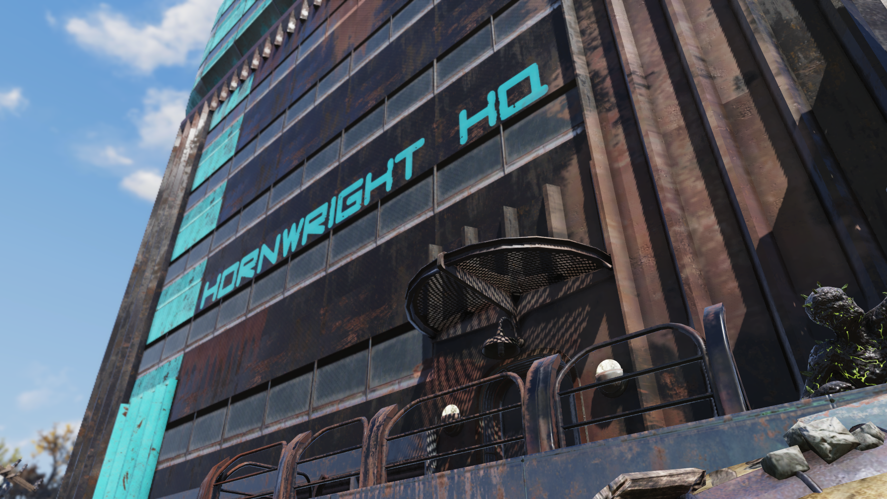
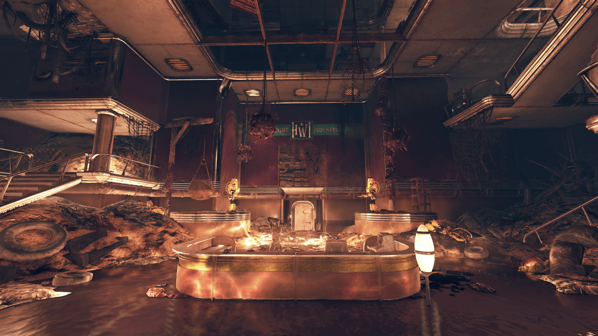
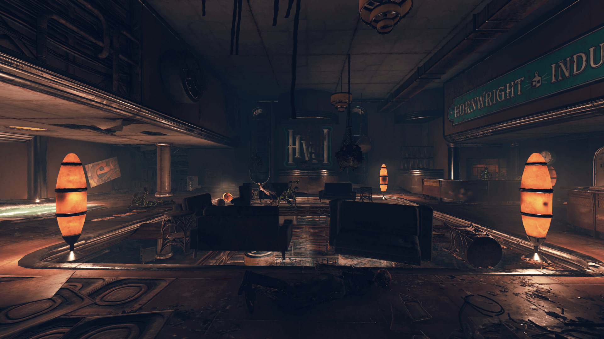
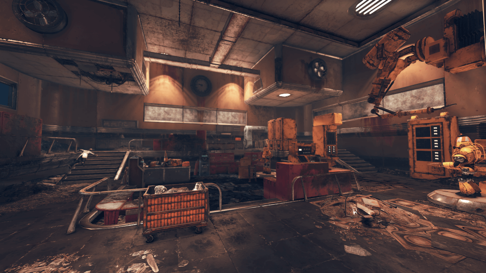
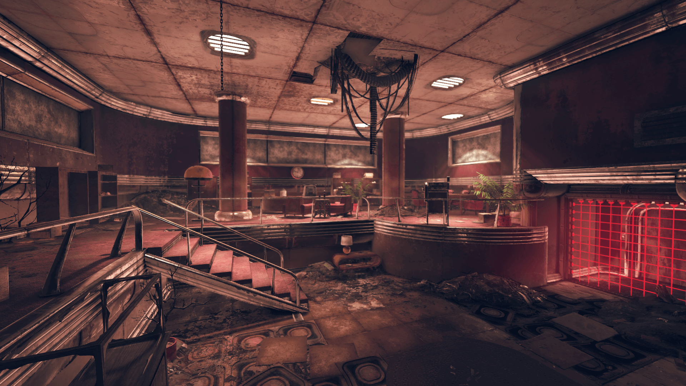
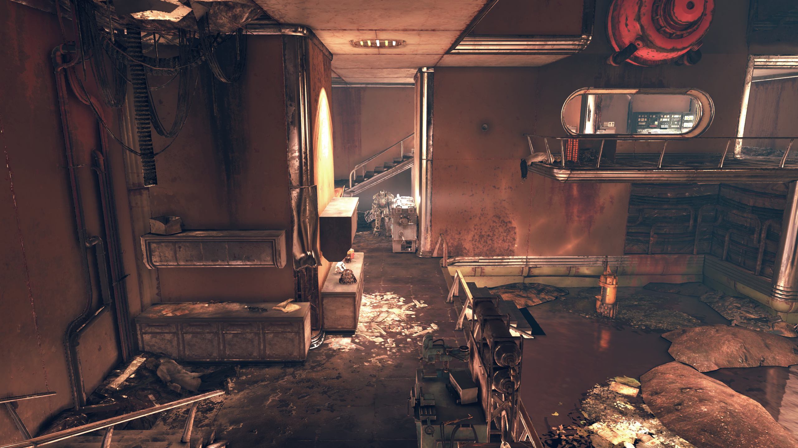
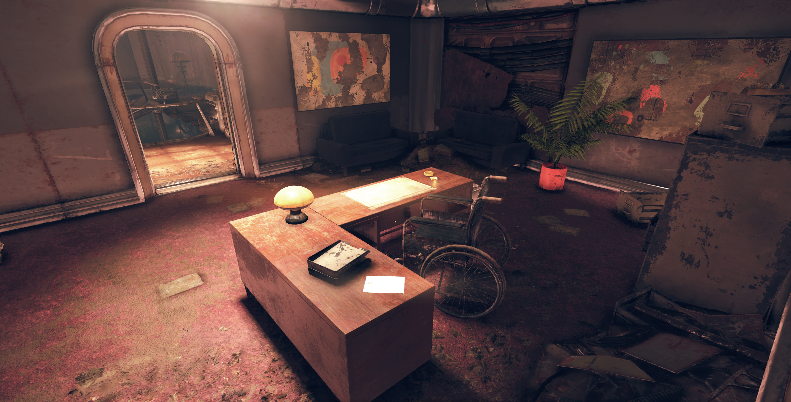
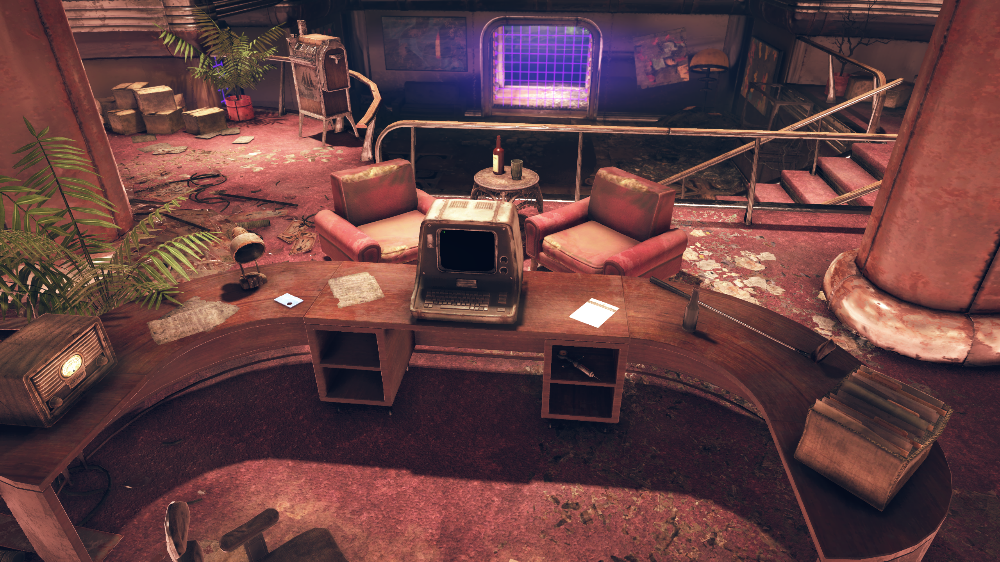
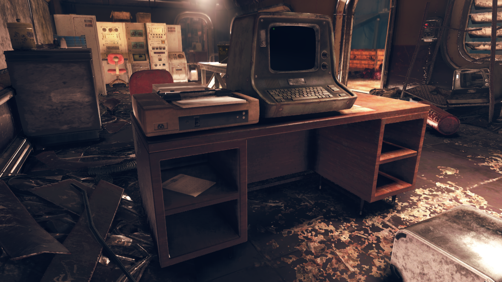
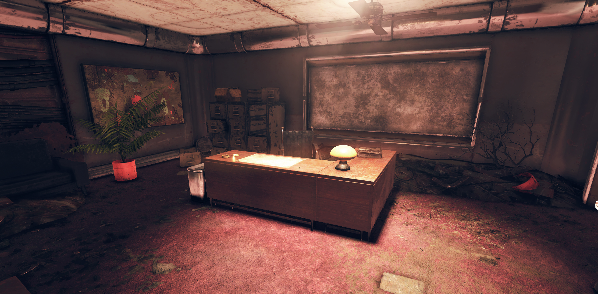
地下レベル
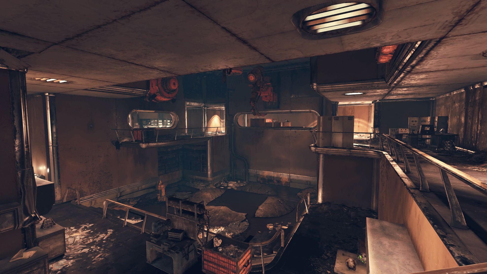
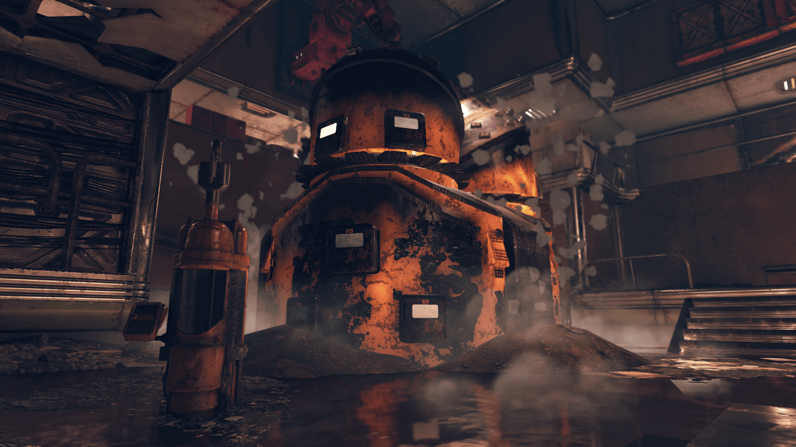
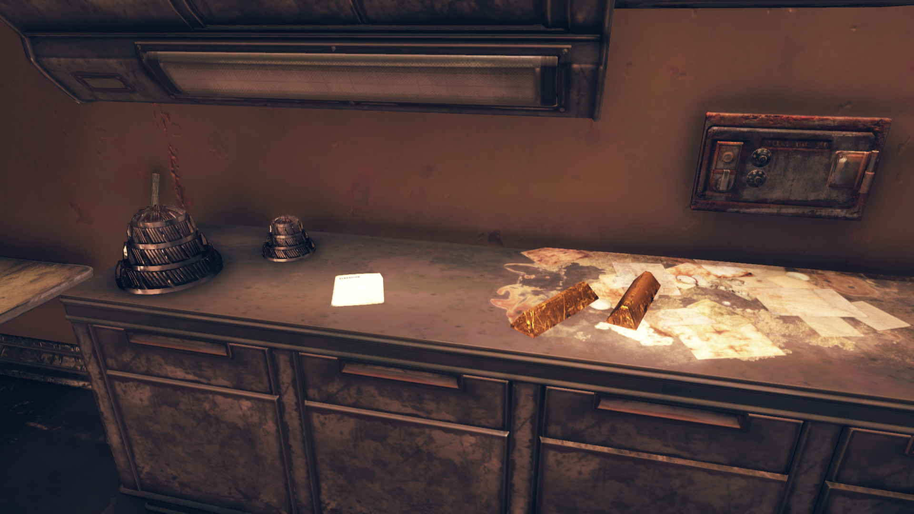
洞窟（ケイブ）
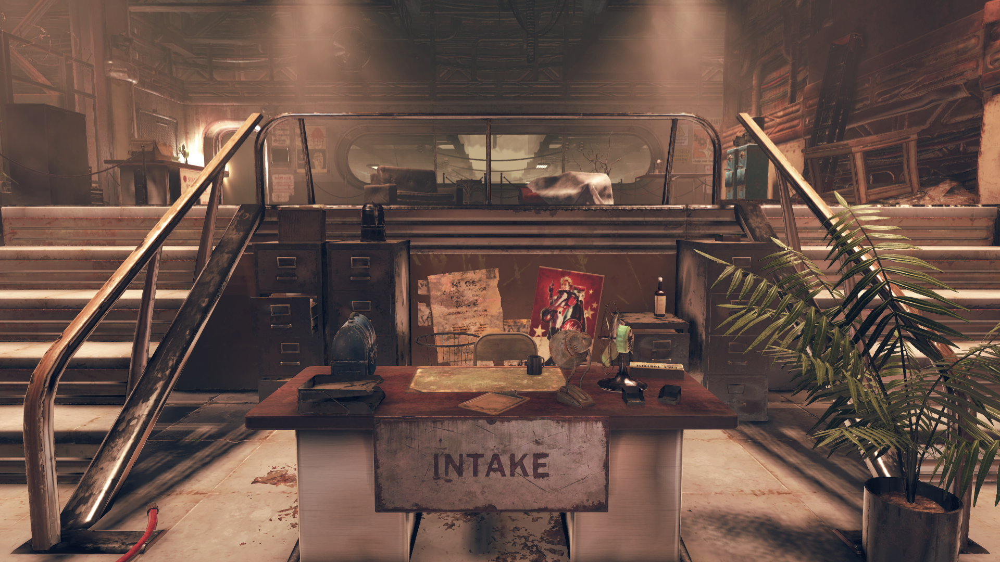
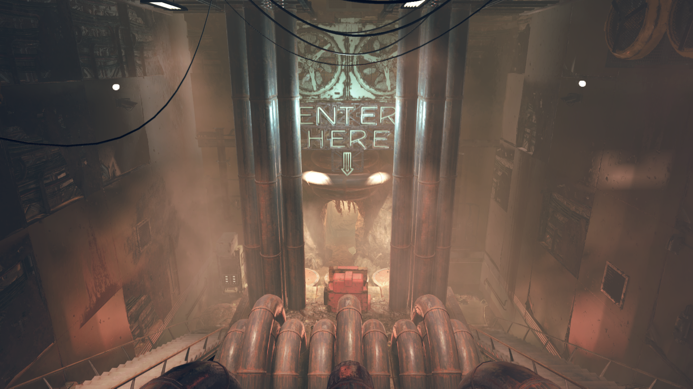
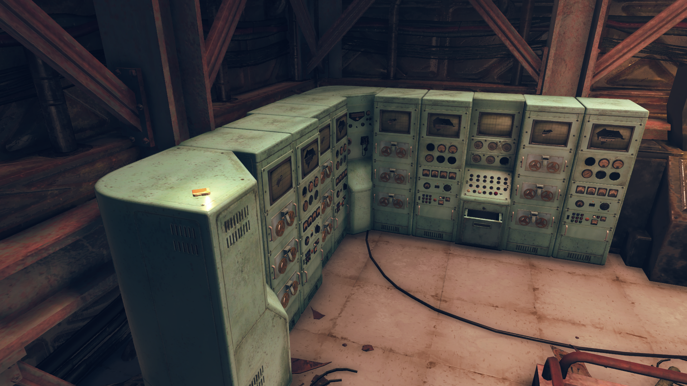
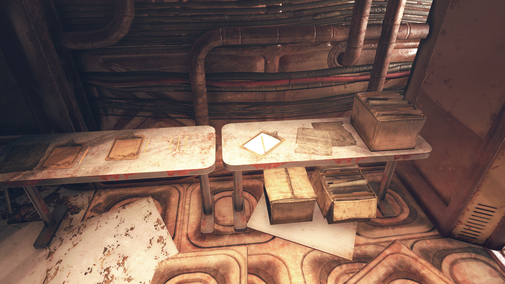
ホーンライト・インダストリアル本社は、Fallout 76の世界で最も物語が濃密なロケーションのひとつです。
9フロアの超高層ビルに詰め込まれたターミナルエントリが、一人の男の傲慢と崩壊の物語を語ります。
ダニエル・ホーンライトの日記を読み進めると、彼が単なる悪役ではないことが分かります。
「2100年までに完全自動化」という壮大なビジョンを持つCEOが、妻エヴリンの死で精神的に追い詰められ、マザーロード・プロジェクトに執着することで自分を保とうとする——その過程で記者を射殺し、上院議員を脅迫し、有能な研究者を使い潰す。
ホセ・ブリガダ博士のログが特に秀逸です。
「州立大学のPhDひとつ」と見下していたジャクソンさんが次々と研究課題を解決し、「天才か泥棒か分からない」「コーヒーは絶品だ」と認めざるを得なくなる展開に、皮肉なユーモアが光ります。
そして最後の「今すぐここを出なさい」というメッセージ——解雇された博士が後任に残す、切実な警告。
受付のイヴェットとアニーのやり取りも見逃せません。
「ロボットのスト破り」という表現は大戦前の自動化問題をシンプルかつ的確に言い当てています。
結局アニーはこの倫理的ジレンマに答えを出して去り、イヴェットは「もう少し考えさせて」と言ったまま、大戦前夜のオフィスに残されたのでしょう。
This article was created by translating and editing Hornwright Industrial headquarters from Nukapedia: The Fallout Wiki.
Licensed under the Creative Commons Attribution-Share Alike License (CC BY-SA 3.0).
コミュニティ維持のため、寄付を受け付けております。
> COMMENTS